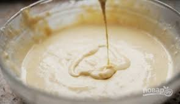

Самый вкусный и быстрый в приотовлении пирог.
Вкус детства.
Пошаговый рецепт с фото
Соблюдайте последовательность. Это важно.
Взбиваем яйца комнатной температуры миксером или вечиком.
Постепенно добавляем сахар и взбивавем около 5 минут
до образования устойчивых пиков.
К яйцам добавляем теплый кефир, соду. Постепено вводим муку.
 Тесто выливаем на противень, или в форму.
По желанию добавляем яблоки или любые другие фрукты, ягоды.
Выпекать в духовке около 30 минут при температуре 180 градусов.
Ваш потрясающий пирог на кефире готов!!!
Для украшения можно использовать:
Приятного аппетита!!!